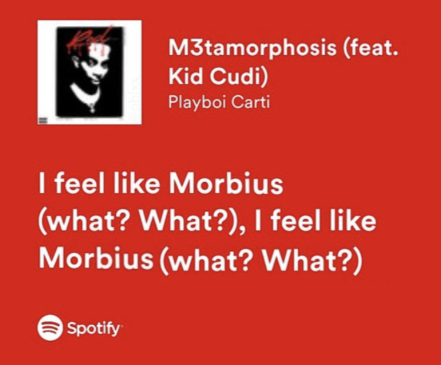

Music
Music has been part of my life since early on in high school. I downloaded a few albums off of pirate bay, as well as starting a playlist with about 80 minutes of songs I liked at the time. As life went on, I ventured into hip-hop, as well as classic, progressive, and alternative rock. I still maintain the same playlist today, now with over 400 songs. I've also amassed a small collection of CDs and vinyl records, most of which I acquired at Flipside Records in Berkely, MI. As for my favorites, my favorite band is Pink Floyd (orginial, I know), and my favorite producers are The Neptunes.
My spotify profile can be found here. I have a few playlists, including the aforementioned large playlist. I also have a couple genre specific playlist, and one for songs that are hype to play in a car. I listen to these occasionally, but I also listen to full albums a lot, mostly from my LP/CD collection. To see my collection and opinions on various records, check out my rateyourmusic page here. I also make music from time to time. Usually shitty hip-hop beats, and unsually with my friend Cait (aka Lil Leezy) rapping about her exes over them. My songs can be found here. I use an MPK mini midi controller and FL Studio 11.
I have a stereo system consisting of a turntable, CD player, tape deck, receiver, and speakers. The turntable is an Audio Technica AT-LP60. It's a pretty inexpensive turntable, but it gets the job done. I've swapped the needle out for a diamond tip eliptical stylus as well, which is supposed to be a little better. The CD player is an old Toshiba DVD player that my family has had for several years. We use the Xbox for DVDs now so the old one serves as my CD player. I also listen to CDs often in my car. The tape deck is a JVC KD-V22 from 1983, purchased at Flipside Records' old location in Clawson, MI. It was a pretty good deal, as it comes with Dolby C noise reduction, and after cleaning the pinch rollers and heads, I haven't had any issues recording or playing tapes. I even used it to make a tape for my friend Joel who's car (a 1974 Ford Torino!) only has a cassette player. The receiver is a Denon DRA-55V AV receiver. It can take input for phono, radio, CD, aux, and 2 tape decks. Thanks to Ev for helping me find a good one. The speakers are from Joel, who found them on the side of the road. They worked surprisingly well until I blew out the left speaking playing Family Ties by Baby Keem too loud. Oops. The laptop shown in the picture is a ThinkPad T61 running Void Linux and Audacity. I use it to digitize my vinyl records, although I haven't done it to all of them. The record shown in the picture is a 12" single of What? by MKII ft. Tariq & Probz.
Check out my 2023 album reviews here!